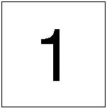
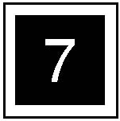

5.1.4 术语和符号 
Terminology 和 符号 | 说明 |
|---|---|
(图 1) 5002 | The 调整 步骤 用于 the relevant parts 已说明 in 章节 4 拆装 和 调整. |
 (图 2) 5001 | The removal, 安装 和 更换 procedures 用于 the relevant parts 是 described in 章节 4 拆装 和 调整. |
 (图 3) 5003 | The removal, 安装, 更换和调整 procedures 用于 the relevant parts 是 described in 章节 4 拆装 和 调整. |
3{4-10 | 指示 配置 的 parts. In 此 notation 示例, 项目 3 is an assembled 零件/部分 configured 和/与 parts of Items 4 to 10. It is written in the 示意图. |
(1/4 个.) | 指示 该 four identical parts 是 installed 但是 该 仅 one of them is shown in the 示意图. |
- - | 如果 零件/部分 编号 column is "- -" or blank, it 指示 该 the 零件/部分 不是 a spare 零件/部分. |
(P/O 项目 5) | If 此 notation appears in the 说明 column, it 指示 该 甚至 parts 该 不是 spare parts 可以 purchased as higher-电平 parts. 此 notation 示例 指示 该 项目 5 可以 零件/部分 ORDER. |
(新) (旧) | 此 term in the 说明 column 显示 the 新 零件/部分 is interchangeable 使用 旧 one. Unless otherwise 指定的 or 那里 是 编号 particular reasons, order the 旧 零件/部分. |
(Alternate) | 此 term in the 说明 column 显示 任一 one 的 parts 可以 used. |
(SCC) 定影 单元 | SCC followed by 零件/部分 名称 in the 说明 column 表示 安全注意事项 Critical 组件. The handling 的 安全注意事项 Critical Components 应 in accordance 使用 regulations regarding the 安全注意事项 Critical Components 设置 by our company. |
(ISC) NVM PWB | ISC followed by 零件/部分 名称 in the 说明 column 表示 重要 信息 Stored 组件 该 存储 重要 customer 信息. 执行 the replacement/discarding 操作 按照 the procedures found in 章节 4. |